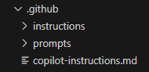
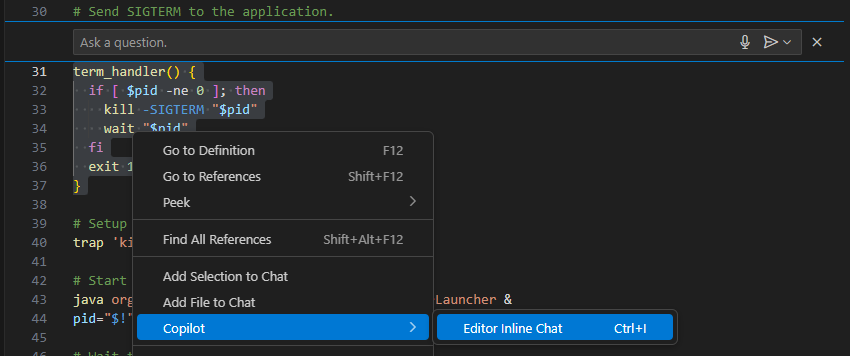

Copilot을 사용하여 개발하는 방법
업데이트:
Ai Assistant
- AI 기술을 기반으로 사용자의 업무나 일과를 지원하거나 수행하는 지능형 소프트웨어 도구를 의미한다.
- 아래의 다양한 종류의 AI Assistant가 존재한다. 1
- 이 글에서는 GitHub Copilot의 설정하고, 이를 이용해 개발하는 방법에 대해서 설명한다.
Project

- 위의 그림과 같이 프로젝트 최상단 폴더에서 .github 폴더 내 아래의 세 분류가 존재한다.
- copilot-instructions.md
- /instructions
- /prompts
- 현재까지 Inline Chat을 통한 질의에는 해당 설정이 적용되지 않으므로, 해당 기능을 활용하여 질의하는 경우에는 프로젝트 구성을 변경하거나 적용하는 행위를 제외한 간단한 질의에만 사용해야한다.
- 
- 해당 이슈는 Inline chat ignores copilot-instructions.md file로 등록되어, 이후 개선될 수 있을 것으로 보인다.
copilot-instructions.md2
# Project Overview
This project is a web application that allows users to manage their tasks and to-do lists. It is built using React and Node.js, and uses MongoDB for data storage.
## Folder Structure
- `/src`: Contains the source code for the frontend.
- `/server`: Contains the source code for the Node.js backend.
- `/docs`: Contains documentation for the project, including API specifications and user guides.
## Libraries and Frameworks
- React and Tailwind CSS for the frontend.
- Node.js and Express for the backend.
- MongoDB for data storage.
## Coding Standards
- Use semicolons at the end of each statement.
- Use single quotes for strings.
- Use function based components in React.
- Use arrow functions for callbacks.
## UI guidelines
- A toggle is provided to switch between light and dark mode.
- Application should have a modern and clean design
- 위와 같이 프로젝트에 대한 전반적인 설명을 markdown을 활용한 자연어 기반으로 작성한다.
- 이 설정은 현재 오픈된 프로젝트의 모든 GitHub Chat에 적용되는 전역 규칙을 정의하여 따르게 한다.
/instructions
- 전역 설정 외 부분적으로 여러 설정을 사용하는 경우, 해당 폴더에 “*.instructions.md” 파일에 저장하여 사용한다.
일부 파일 적용 혹은 제외
---
applyTo: '**/*.ts'
---
# VS Code Copilot Development Instructions for TypeScript
You MUST check compilation output before running ANY script or declaring work complete!
1. **ALWAYS** check the "VS Code - Build" task output for compilation errors
3. **NEVER** run tests if there are compilation errors
3. **NEVER** use `npm run compile` to compile TypeScript files, always check task output
4. **FIX** all compilation errors before moving forward
- 위 코드는 VSCode Github 내 typescript.instructions.md의 일부를 발췌한 내용이다.
- 여기서 applyTo는 glob 구문을 사용하여, “*/.ts”로 프로젝트 내 모든 ts 확장자를 가진 폴더에 적용한다는 것을 나타낸다.
- 역으로, test 폴더 내 ts 파일들을 제외하고 적용하고 싶다면
applyTo: '**/*.ts, !test/**/*.ts'와 같이 설정이 가능하다.
IDE 설정에 적용
- 대표적으로 VSCode를 예를 들면, 아래의 각 설정에 따라 각 instructions 파일을 읽어와 사용할 수 있다.3
- github.copilot.chat.codeGeneration.useInstructionFiles : 코드 생성에 instructions 파일을 적용할지 여부를 결정한다. (실험)
- chat.instructionsFilesLocations : 특정 폴더 별 채팅에서 instructions 파일을 사용할지 여부를 결정한다.
예를 들어, 아래와 같이 설정한다.
"chat.instructionsFilesLocations": { "src/frontend/instructions": true, "src/backend/instructions": false } - github.copilot.chat.codeGeneration.instructions : 코드 생성에 사용될 instructions 파일을 설정한다. (실험)
- github.copilot.chat.testGeneration.instructions : 테스트 생성에 사용할 instructions 파일을 설정한다. (실험)
- github.copilot.chat.reviewSelection.instructions : 선택 영역 리뷰에 사용할 instructions 파일을 설정한다. (프리뷰)
- github.copilot.chat.commitMessageGeneration.instructions : 커밋 메시지 생성에 사용할 instructions 파일을 설정한다. (실험)
- github.copilot.chat.pullRequestDescriptionGeneration.instructions : pull request 설명 생성에 사용할 instructions 파일을 설정한다. (실험)
/prompts4
- 자주 사용하는 작업에 필요한 프롬프트를 markdown 저장하여 빠르게 실행하기 위한 기능으로, 해당 폴더 내 “*.prompt.md” 파일로 저장하고 설정된 이름을 “/” 이후 넣어 실행시킨다.
- 대표적으로, plan인 계획 생성과 implement인 코드 구현을 주로 사용한다.
- /plan 명령을 통해 기본 코드 구현 계획 문서를 생성한다.
- /implement 명령을 통해 계획 문서를 참고하여 코드를 구현한다.
plan.prompt.md
---
mode: agent
description: 'Plan the solution for a problem.'
tools: ['codebase', 'fetch', 'findTestFiles', 'githubRepo', 'search', 'searchResults', 'usages', 'vscodeAPI']
---
Your goal is to write a Detailed Plan to fix the bug or add new features. To do this, you first need to:
* Read the issue description and comments to understand the context of bugs or features.
* Read the relevant instruction file to understand the code base.
* If it's a bug, identify the **root cause of the bug and explain it to the user.
The plan must be in Markdown format and save the file name in the 'plan/' directory as "**_plan.md".
- 계획 문서를 만들기 위한 프롬프트 내용으로, 아래의 세부 설정을 적용하였다.
- mode를 통해 Copilot 모드를 agent로 실행할 것을 정의한다.
- tools를 통해 무엇을 활용하여 내용을 작성할지를 결정한다. 기본적으로 IDE에 내장된 Built-In Tool과 Extension에서 제공되는 Tool 등을 사용할 수 있다.
- 자연어를 기반으로 Markdown 문법으로 설계에 있어 반드시 포함해야 하는 항목을 정의하였고, 이를 다시 Markdown 형태의 문서로 작성되도록 하였다.
- 계획 문서는 최종 implement를 수행하기 전 단계에서 내용을 확인하고 상세화 시켜 보완된 내용으로 발전시킨다.
implement.prompt.md
---
mode: agent
description: 'Implement the solution for a problem.'
tools: ['codebase', 'usages', 'vscodeAPI', 'problems', 'changes', 'testFailure', 'openSimpleBrowser', 'fetch', 'findTestFiles', 'searchResults', 'githubRepo', 'todos', 'runTests', 'editFiles', 'runNotebooks', 'search', 'runCommands', 'runTasks']
---
Please write a high quality, general purpose solution. Implement a solution that works correctly for all valid inputs, not just the test cases.
Do not hard-code values or create solutions that only work for specific test inputs. Instead, implement the actual logic that solves the problem generally.
The end solution should be solid, maintainable, and scalable.
- 코드 구현을 위한 프롬프트 내용으로, 아래의 세부 설정을 적용하였다.
- mode를 통해 Copilot 모드를 agent로 실행할 것을 정의한다.
- tools를 통해 무엇을 활용하여 내용을 작성할지를 결정한다. 기본적으로 IDE에 내장된 Built-In Tool과 Extension에서 제공되는 Tool 등을 사용할 수 있다.
- 자연어를 기반으로 Markdown 문법으로 구현에 중요시 여기는 내용을 위주를 작성하여 코드 생성에 참고하도록 하였다.
정리
- AI Assistant의 발전을 통해 코드 작성과 소프트웨어 개발에 필요한 시간은 점점 줄어들고 있으며, 이를 위한 다양한 도구와 기술들이 빠르게 개발 및 적용되고 있다.
- 과거 코딩하는 시간이 부족했던 개발자는 AI Assistant의 도입으로 점차 설계에 더 집중하고 더 나은 방향성으로 코드가 구현되기 위해 위와 같은 기술들을 적극 교육 및 업무에 적용해야한다.
참고
- AI Assistant와 Chat을 진행하면서 주제가 변경되면 “새 술을 새 부대에 담아라.” 라는 말이 있듯이 새 Chat을 다시 생성하여 작성해야 Hallucination을 줄일 수 있다. 이는 물론 사람과 대화에 있어서도 주제를 넘나들며 이야기하면 경청에 방해가 되며, 주제를 혼동할 수 있음을 염두해야한다.
- AI Assistant는 전지전능하지 않으며 아직까지는 “개떡같이 말해도 찰떡같이 알아듣는다”라는 속담을 만족시킬 수 없으므로, 질문에 있어서 상세화 및 구체화 시키고 어려운 설명에는 예시를 참고하여 질의하면 더욱 좋은 품질의 응답을 받을 수 있다.